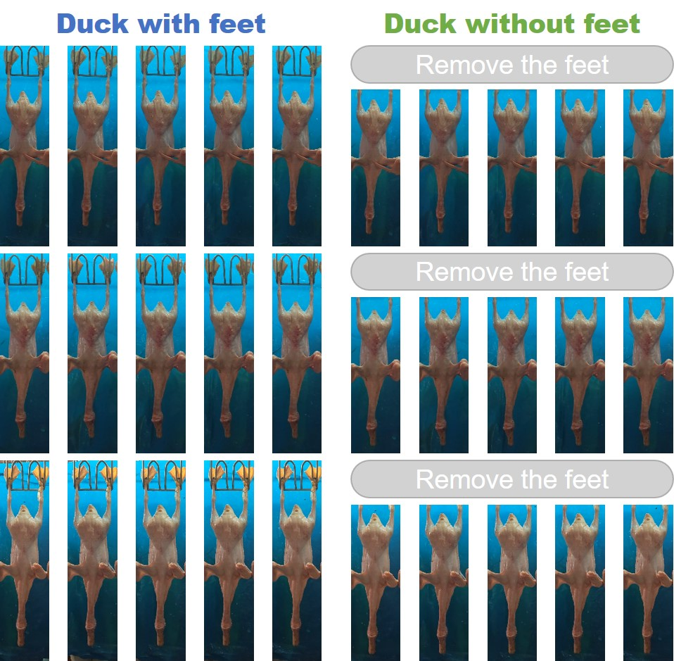

- School of Control Engineering, Northeastern University at Qinhuangdao, Qinhuangdao 066004, China.
- Hebei Key Laboratory of Micro-Nano Precision Optical Sensing and Measurement Technology.
- School of Cyber Security, University of Chinese Academy of Sciences, Beijing 100049, China.
- State Key Laboratory of Information Security, Institute of Information Engineering, Chinese Academy of Sciences, Beijing 100093, China.
- State Key Laboratory of Robotics, Shenyang Institute of Automation, Chinese Academy of Sciences, Shenyang 110016, China.
- Institutes for Robotics and Intelligent Manufacturing, Chinese Academy of Sciences, Shenyang 110169, China.
- Department of Mechanical Engineering, City University of Hong Kong, Kowloon Tong, Hong Kong SAR, China.
Overview

The factory produces lots of ducks every day, so we hope to develop a fast and high-precision weighing method, which will be very convenient to weigh with machine vision. We locate each duck from multiple perspectives, make predictions through the deep learning network, and predict the weight of the duck in real time. Traditional machine vision weighing methods mostly try to fit the relationship between animal pixel area and weight in the field of view, or regress some of the extracted feature values, such as contour circumference. We are the first work to predict animal weights end-to-end through images, and it surpasses traditional non-contact weighing methods in accuracy.
Environment
 |
|
Datasets
The dataset was collected in a duck husbandry factory (Shandong Hongye Food Co. Ltd., Shandong, China).
For more details and download see https://github.com/RuoyuChen10/Duck_weight_datasets/.
